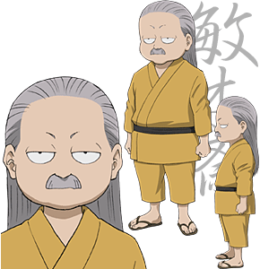

|  |
鄙人 柳生宗严，日本剑术家。名宗严，号石舟斋。家严之子，是大和的豪族，柳生新阴流之祖。畿内第一的剑豪，但败于上泉信纲的弟子疋田丰五郎，于是拜入信纲的流派。不久后领悟“无刀取”的奥秘，被授予新阴流的印可。后来，受德川家康之召，柳生家成为德川家的兵法指导。 |
| 不听老夏胡诌 | |
| 老夏 |
完全不是什么名门之后。大发！ 一岁，学会走路。 两岁，学会说话。 三岁，学会 四岁，不知道在干嘛。 五岁，喜欢上画画。 六岁，练习书法，但是失败了。。。西奈！ 七岁，入小学。（这么早就没有点了么，后面还有十几年要讲呐！） 八岁，当众做了奇怪的力学试验被班主任认为是智障。。。嘛，无所谓了。 九岁，发现了气压，后被告知早在300年前，有个叫帕斯卡的人已经发现过了。妈蛋，有本事不要生那么早呀~~~ 十岁，考试没做完被老师骂了一顿，回家后还被揍了。啊哈，啊哈哈哈哈哈，活该！ 十一岁，进了奥数班，可是老师只喜欢前两名，妈蛋！ 十二岁，被同班同学欺负。（说好不打自己人的呐？） 十三岁，领悟了时间与空间的关系，开始研究天文物理。然并卵！继续被同班同学欺负。 十四岁，还是被同班同学欺负。（果然初中的故事是说起来最方便的，一直重复就行了） 十五岁，被同班同学欺负。（今晚上就吃寿司好了） 十六岁，学乖了，先跟班干部搞好关系，再和非干部搞好关系。终于，成了班长的姐姐。 十七岁，物理老师鄙视说我思维不对。。。妈蛋，把题目出得再难一点，不要让我拿第一呀~~~ 十八岁，事实证明，就是没有点也是能编的 十九岁，老师说：日后我们是要成为计算机科学家的。 二十岁，开始接受正统日本吐槽教育。 二十一岁，要成为Saitama Sensei那样的第一谋士。 二十二岁，蹲的时候用力过大，意外发现自己是有觉醒力计量表的。 二十三岁，豆沙包，豆沙包，豆沙包，豆沙包，豆沙包。 二十四岁，夜色降临后的小树林里，做见不得人的事情。一年后，室友的狗依旧没能学会卡咩咖灭哈。 二十五岁，成为了潭州人，这个得认真一点说，配文字边框，闪烁，字体变化特效（聪明的人都能看见这些特效）。 |
| 此人很懒，连背景图都没有，更不要说照片了。返回比这好看一点的介绍 | |